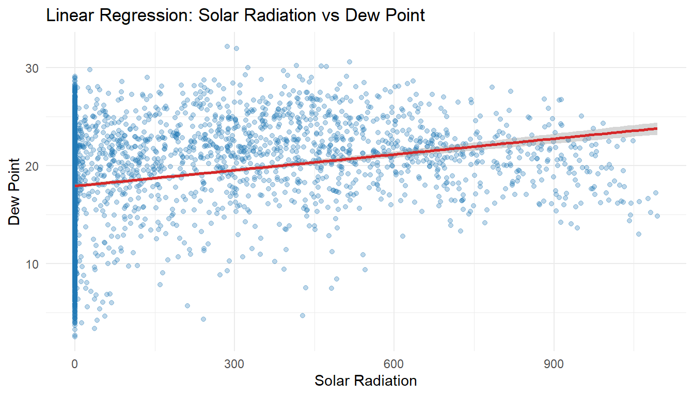
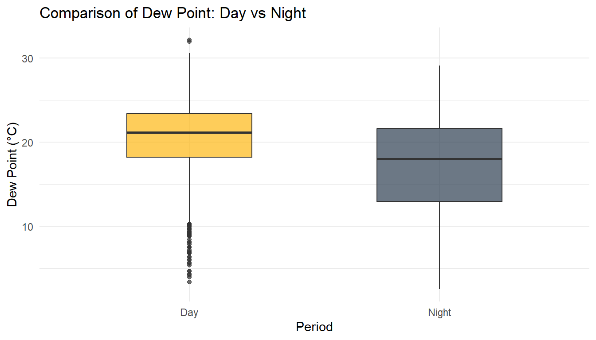
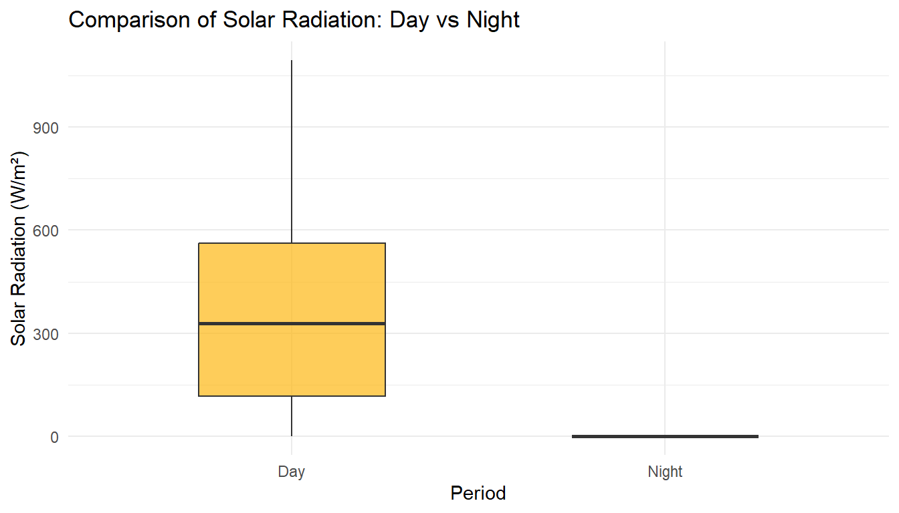
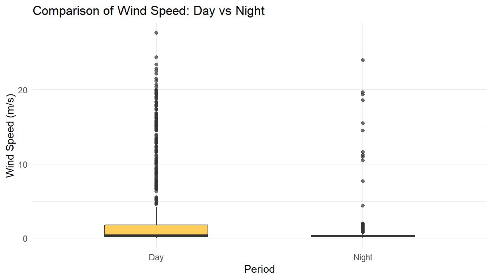
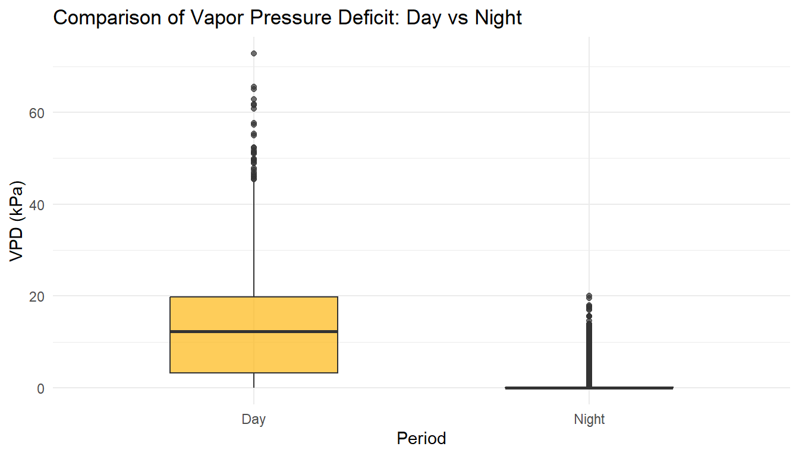
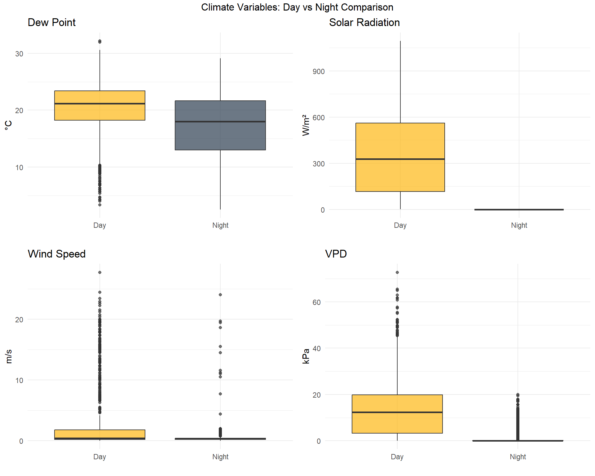

This analysis performs a comprehensive statistical examination of climate data from the Mahdia station in Tunisia (2024). The project includes:
1.1 Data Processing Pipeline
Data Acquisition: Downloads CSV from Tunisia’s agricultural data catalog via HTTP GET request
Data Transformation: Converts long-format data (Date, Variable, Value) to wide format for analysis
Variable Extraction: Extracts and renames key climate variables:
Solar Radiation (Solar_Rad)
Wind Speed (Wind_Speed)
Dew Point (Dew_Point)
Vapor Pressure Deficit (VPD)
Period Classification: Categorizes observations as “Day” (Solar_Rad > 0) or “Night” (Solar_Rad = 0)
1.2 Statistical Analyses Performed
Normality Testing: Shapiro-Wilk test on Wind Speed (sampled to 5000 observations for computational efficiency)
Correlation Analysis: Pearson correlation matrix for all numeric climate variables
Linear Regression: Simple linear model predicting Dew Point from Solar Radiation
Hypothesis Testing: Student’s t-test comparing Dew Point between Day and Night periods
Descriptive Statistics: Summary statistics for all climate variables
1.3 Visualizations
Correlation heatmap
Regression scatter plot with fitted line
Multiple boxplots comparing Day vs Night for different climate variables
2 1. Introduction
This report analyzes meteorological data from the Mahdia climate station to explore relationships between solar radiation, wind speed, dew point, and vapor pressure deficit (VPD).
model <-lm(Dew_Point ~ Solar_Rad, data = df)print("--- Linear Regression Model (Dew_Point ~ Solar_Rad) ---")
[1] "--- Linear Regression Model (Dew_Point ~ Solar_Rad) ---"
summary(model)
Call:
lm(formula = Dew_Point ~ Solar_Rad, data = df)
Residuals:
Min 1Q Median 3Q Max
-15.530 -3.229 0.627 3.831 12.693
Coefficients:
Estimate Std. Error t value Pr(>|t|)
(Intercept) 1.794e+01 1.092e-01 164.29 <2e-16 ***
Solar_Rad 5.366e-03 3.342e-04 16.06 <2e-16 ***
---
Signif. codes: 0 '***' 0.001 '**' 0.01 '*' 0.05 '.' 0.1 ' ' 1
Residual standard error: 5.19 on 3316 degrees of freedom
Multiple R-squared: 0.07214, Adjusted R-squared: 0.07186
F-statistic: 257.8 on 1 and 3316 DF, p-value: < 2.2e-16
ggplot(df, aes(Solar_Rad, Dew_Point)) +geom_point(color ="#1f77b4", alpha =0.3) +geom_smooth(method ="lm", color ="#d62728") +labs(title ="Linear Regression: Solar Radiation vs Dew Point",x ="Solar Radiation",y ="Dew Point" ) +theme_minimal()

8 7. Day vs Night Comparison - Statistical Tests
t_test_res <-t.test(Dew_Point ~ Period, data = df)print("--- T-Test (Day vs Night Dew Point) ---")
[1] "--- T-Test (Day vs Night Dew Point) ---"
print(t_test_res)
Welch Two Sample t-test
data: Dew_Point by Period
t = 19.279, df = 3060.8, p-value < 2.2e-16
alternative hypothesis: true difference in means between group Day and group Night is not equal to 0
95 percent confidence interval:
3.078816 3.775984
sample estimates:
mean in group Day mean in group Night
20.63216 17.20476
9 8. Boxplots: Day vs Night Comparisons
9.1 8.1 Dew Point Comparison
ggplot(df %>%filter(!is.na(Period)), aes(x = Period, y = Dew_Point, fill = Period)) +geom_boxplot(alpha =0.7, width =0.5) +scale_fill_manual(values =c("Day"="#FDB813", "Night"="#2C3E50")) +labs(title ="Comparison of Dew Point: Day vs Night",y ="Dew Point (°C)",x ="Period" ) +theme_minimal() +theme(legend.position ="none")

9.2 8.2 Solar Radiation Comparison
ggplot(df %>%filter(!is.na(Period) &!is.na(Solar_Rad)), aes(x = Period, y = Solar_Rad, fill = Period)) +geom_boxplot(alpha =0.7, width =0.5) +scale_fill_manual(values =c("Day"="#FDB813", "Night"="#2C3E50")) +labs(title ="Comparison of Solar Radiation: Day vs Night",y ="Solar Radiation (W/m²)",x ="Period" ) +theme_minimal() +theme(legend.position ="none")

9.3 8.3 Wind Speed Comparison
ggplot(df %>%filter(!is.na(Period) &!is.na(Wind_Speed)), aes(x = Period, y = Wind_Speed, fill = Period)) +geom_boxplot(alpha =0.7, width =0.5) +scale_fill_manual(values =c("Day"="#FDB813", "Night"="#2C3E50")) +labs(title ="Comparison of Wind Speed: Day vs Night",y ="Wind Speed (m/s)",x ="Period" ) +theme_minimal() +theme(legend.position ="none")

9.4 8.4 VPD Comparison
ggplot(df %>%filter(!is.na(Period) &!is.na(VPD)), aes(x = Period, y = VPD, fill = Period)) +geom_boxplot(alpha =0.7, width =0.5) +scale_fill_manual(values =c("Day"="#FDB813", "Night"="#2C3E50")) +labs(title ="Comparison of Vapor Pressure Deficit: Day vs Night",y ="VPD (kPa)",x ="Period" ) +theme_minimal() +theme(legend.position ="none")

9.5 8.5 Combined Boxplot Panel
library(gridExtra)p1 <-ggplot(df %>%filter(!is.na(Period)), aes(x = Period, y = Dew_Point, fill = Period)) +geom_boxplot(alpha =0.7) +scale_fill_manual(values =c("Day"="#FDB813", "Night"="#2C3E50")) +labs(title ="Dew Point", y ="°C", x ="") +theme_minimal() +theme(legend.position ="none")p2 <-ggplot(df %>%filter(!is.na(Period) &!is.na(Solar_Rad)), aes(x = Period, y = Solar_Rad, fill = Period)) +geom_boxplot(alpha =0.7) +scale_fill_manual(values =c("Day"="#FDB813", "Night"="#2C3E50")) +labs(title ="Solar Radiation", y ="W/m²", x ="") +theme_minimal() +theme(legend.position ="none")p3 <-ggplot(df %>%filter(!is.na(Period) &!is.na(Wind_Speed)), aes(x = Period, y = Wind_Speed, fill = Period)) +geom_boxplot(alpha =0.7) +scale_fill_manual(values =c("Day"="#FDB813", "Night"="#2C3E50")) +labs(title ="Wind Speed", y ="m/s", x ="") +theme_minimal() +theme(legend.position ="none")p4 <-ggplot(df %>%filter(!is.na(Period) &!is.na(VPD)), aes(x = Period, y = VPD, fill = Period)) +geom_boxplot(alpha =0.7) +scale_fill_manual(values =c("Day"="#FDB813", "Night"="#2C3E50")) +labs(title ="VPD", y ="kPa", x ="") +theme_minimal() +theme(legend.position ="none")grid.arrange(p1, p2, p3, p4, ncol =2, top ="Climate Variables: Day vs Night Comparison")

10 9. Conclusion
10.1 Key Findings:
Solar radiation significantly influences dew point - The linear regression model demonstrates a clear relationship between these variables
Clear statistical differences exist between day and night - The t-test confirms significant differences in dew point between periods
Results support microclimate and agricultural analysis - The comprehensive statistical analysis provides insights for agricultural planning and climate monitoring
10.2 Recommendations:
Continue monitoring these climate variables for long-term trend analysis
Use the day/night classification for targeted agricultural interventions
Consider expanding the analysis to include seasonal variations and extreme weather events